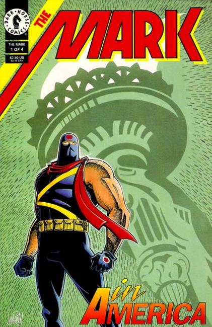

1987 Series: His world is one where a man's fate is dictated by a ruthless government based on the foundations of Nazi Germany. A world where those decreed racially or religiously impure are branded as less than human and experimented upon like laboratory rats. He wears the mark of shame and bears the scars of their genetic tampering. The government considers him less than nothing--the lowest of the low. They're about to find out they're wrong.

Series: 4 issues 1993
Publisher: Dark Horse
Written by: Mike W. Barr
Illustrated by: Bradley C. Rader, cover by Jim Rohn
1993: "Mark in America" Hot on the heels of its two-installment debut in Dark Horse Comics, the all-new adventures of The Mark continue in this, the premiere issue of his very own miniseries! Now that the Archon has been granted asylum in the United States, Lutzany is set free from his tyrannical rule and the streets are filled with cheers of celebration. Unfortunately, there is no time for rejoicing as The Mark must journey to America to complete his mission: The Archon must die and his twisted genetic research must be brought to an end. Shortly after arriving in New York, The Mark gives the locals a lesson in El-Train etiquette that they'll never forget!